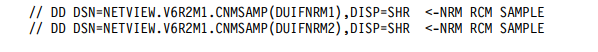

The plus sign specifies one or more occurrences of a character. Thus, smith+ern is equivalent to, for example, smithhhern.
Groups a subexpression allowing an operator, such as *, +, or [ ], to work on the subexpression enclosed in parentheses. For example, (a*(cb+)*) matches any string that contained zero or more occurrences of a, followed by zero or more occurrences of the pattern c followed by one or more occurrences of b.
The asterisk (*) character in a DOS pattern becomes a period asterisk (.*) in a regular expression. The question mark (?) characters in a DOS pattern becomes a period (.) in a regular expression.
All DOS patterns are prepended with a caret (^) (which matches the beginning of a string), and appended with a dollar sign ($) (which matches the end of a string) when they are converted into a regular expression by the RODM Collection Manager. This forces the entire string to be matched, character for character.
For example, the pattern *IS?R* is a DOS pattern that matches the following strings:
However, it does not match these strings:
The same pattern expressed as a regular expression is \.*IS.R.*
The pattern \RE[AGLRU]+.E[^A-O]+.*ON is a regular expression that matches the following strings:
However, it does not match these strings:
A {Value} in a leaf specification is always initially interpreted as a character string. The {Class/Field} that the {Value} is compared with can be one of a number of actual data types. If necessary, {Value} (each value, in the case of a list of values) is converted to the appropriate data type before the comparison is done. In general, only character data types can be expressed using DOS wildcards or regular expressions. Special characters for pattern matching are interpreted as the literal character if found in a {Value} that is to be matched against other data types.
Not all RODM data types are allowed for a {Class/Field} element of a leaf specification. The following table lists each of the RODM data types, indicates whether the data type is allowed in a leaf specification, indicates whether DOS wildcards or regular expressions are allowed for the data type, and shows how data is converted from a character string to match the data type.
RODM Data Type |
Allowed in Leaf |
Allows |
Conversion |
|---|---|---|---|
| ANONYMOUS | No | N/A | N/A |
| ANONYMOUSVAR | Yes | No | {Value} contains only the characters '0' or '1', which are converted to an actual bitstring before the comparison. |
| APPLICATIONID | No | N/A | N/A |
| BERVAR | Yes | No | {Value} contains only the characters '0' or '1', which are converted to an actual bitstring before the comparison. |
| CHARVAR | Yes | Yes | None (treated as a character string) |
| CHARAVARADDR | No | N/A | N/A |
| CLASSID | No | No | None (treated as a character string) |
| CLASSIDLIST | No | N/A | N/A |
| CLASSLINKLIST | No | N/A | N/A |
| ECBADDRESS | No | N/A | N/A |
| FIELDID | Yes | No | {Value} is converted to an integer. It is an error if {Value} contains characters that cannot be converted to a floating point variable |
| FLOATING | Yes | No | {Value} is converted to a floating point variable. It is an error if {Value} contains characters that cannot be converted to a floating point variable |
| GRAPHICVAR | No | N/A | N/A |
RODM Data Type |
Allowed in Leaf |
Allows |
Conversion |
|---|---|---|---|
| INTEGER | Yes | No | {Value} is converted to an integer. It is an error if {Value} contains characters that cvannot be converted to an integer. |
| INDEXLIST | Yes | Yes | None (Each value in the IndexList is treated as a CharVar, regardless of the actual type. At least one value must compare successfully for the IndexList to compare successfully. |
| METHODNAME | No | N/A | N/A |
| METHODPARAMETERLIST | No | N/A | N/A |
| METHODSPEC | No | N/A | N/A |
| OBJECTID | No | N/A | N/A |
| OBJECTIDLIST | No | N/A | N/A |
| OBJECTLINK | No | N/A | N/A |
| OBJECTLINKLIST | No | N/A | N/A |
| OBJECTNAME | Yes | Yes | None (treated as a character string) |
| RECIPIENTSPEC | No | N/A | N/A |
| SELFDEFINING | No | N/A | N/A |
| SHORTNAME | No | No | None (treated as a character string) |
| SMALLINT | Yes | No | {Value} is converted to a short integer. It is an error if {Value} contains characters that cannot be converted to a short integer, |
| SUBSCRIBEID | No | N/A | N/A |
| SUBSCRIPTSPEC | No | N/A | N/A |
| SUBSCRIPTSPECLIST | No | N/A | N/A |
| TIMESTAMP | No | N/A | N/A |
| TRANSID | No | N/A | N/A |
This section contains examples of the Collection Definition Objects.
Collect all objects in the GMFHS_Managed_Real_Objects_Class whose DisplayStatus field is not equal to 129 and show them in a Network View. The vertical bar character (|) serves as the separator character on the CollectionSpec1 field.
The CDO object that describes this collection can be specified as follows in a RODM loader file:
CREATE INVOKER ::= 0000003;
OBJCLASS ::= Network_View_Collection_Class;
OBJINST ::= MyName = (CHARVAR) ’Example1’;
ATTRLIST
Annotation ::= (CHARVAR) ’Example1 Annotation’,
LayoutType ::= (INTEGER) 1,
CollectionSpec1 ::=
(CHARVAR) ’|GMFHS_Managed_Real_Objects_Class|
DisplayStatus|129|.NE.’;
END;
This RODM Collection Manager creates a Network_View_Class object called "Example1" with a LayoutType of 1 and Annotation of "Example1 Annotation". The collection specification represents a single conditional (it is composed of a single leaf specification). The matching object list is copied to the ContainsObject field of the Example1 view.
Collect all objects in the appnTransmissionGroupCircuit class (actual class name is 1.3.18.0.0.2058) whose DisplayResourceOtherData field contains a CP as the first two characters, and Active as the last six characters AND all objects in the appnTransmissionGroupCircuit class whose AggregationPriorityValue is equal to 1, 2, or 3 , and put them into an Aggregate. The vertical bar character (|) serves as the separator character
The CDO object that describes this collection can be specified as follows in a RODM loader file:
CREATE INVOKER ::= 0000003
OBJCLASS ::= Aggregate_Collection_Class;
OBJINST ::= MyName = (CHARVAR) ’Example2’;
ATTRLIST
DisplayResourceOtherData ::= (CHARVAR) ’Example2 Other Data’,
DisplayResourceOtherData ::= (CHARVAR) ’Example2 Other Data’,
CollectionSpec1 ::=
(CHARVAR) ’|1.3.18.0.0.2058|DisplayResourceOtherData|
CP*Active|.CONTAINS=.’,
CollectionSpec2 ::=
(CHARVAR) ’|1.3.18.0.0.2058|AggregationPriorityValue|
1|2|3|.EQ.|.AND.’;
END;
The RODM Collection Manager creates a GMFHS_Aggregate_Objects_Class object called Example2 with a DisplayResourceOtherData of "Example2 Other Data" and a DisplayResourceUserData of "Example2 User Data". The other fields that are not specified on the Aggregate_Collection_Class object are set to the defaults used for objects created on the GMFHS_Aggregate_Objects_Class.
The collection specification is represented in both of the CollectionSpecn fields. It can be placed entirely in either the CollectionSpec1 or CollectionSpec2 field; this example demonstrates the concatenation of the two fields. The actual collection specification, after concatenation, is:
|1.3.18.0.0.2058|DisplayResourceOtherData|CP*Active|.CONTAINS=.|1.3.18.0.0.2058| AggregationPriorityValue|1|2|3|.EQ.|.AND.
This collection specification represents a complex conditional (it is composed of a two leaf specifications). DOS wildcards are used to find the objects that match the DisplayResourceOtherData value. If there are three objects in class 1.3.18.0.0.2058 with objects IDs 1, 2, and 3, and their corresponding DisplayResourceOtherData fields contain:
and their corresponding AggregationPriorityValue fields contain:
After evaluating the first leaf specification, the virtual stack contains:
where {1, 3} is the object list produced from evaluating the leaf specification. After evaluating the second leaf specification, the virtual stack contains:
The .AND. conjunction causes the two object lists to be removed from the stack; their intersection results in the list {3} which is added to the stack. This object is the result of the entire complex conditional. It is linked into both the AggregationChild field (using the DUIFCUAP method) and the IsPartOf field on the Example2 object.
There is no benefit using two different classes in the individual leaf specifications. Both leaf specifications, by definition, produce object lists that contain no objects in common. The intersection of the lists requested by the .AND. conjunction therefore always produces an empty object list. If the conjunction is .OR., then using two different classes is acceptable.
Collect all objects in the GMFHS_Managed_Real_Objects class whose MyName matches TEST plus an alphabetic classification character plus some number of additional characters plus 1 plus a numeric range character; for example, "TESTACPU10", as long as the alphabetic classification character is not B, and whose DisplayStatus is either Satisfactory or Unsatisfactory. Add to this list the objects in the GMFHS_Aggregate_Objects_Class whose MyName matches TEST plus an alphabetic classification character plus some number of additional characters, for example, "TESTACPUALL", as long as the alphabetic classification character is not B. Enter them into a Network View.
The CDO object that describes this collection can be specified as follows in a RODM loader file:
CREATE INVOKER ::= 0000003;
OBJCLASS ::= Network_View_Collection_Class;
OBJINST ::= MyName = (CHARVAR) ’Example3’;
ATTRLIST
Annotation ::= (CHARVAR) ’Example3 Annotation’,
CollectionSpec1 ::=
(CHARVAR) ’|GMFHS_Managed_Real_Objects_Class|MyName|\^TEST[A-C].*1.$|
.CONTAINS.’
’|GMFHS_Managed_Real_Objects_Class|MyName|TESTB*|
.NCONTAINS.|.AND.’
’|GMFHS_Managed_Real_Objects_Class|DisplayStatus|130|
.LE.|.AND.’
’|GMFHS_Aggregate_Objects_Class|MyName|\^TEST[A-C].*$|
.CONTAINS.’
’|GMFHS_Aggregate_Objects_Class|MyName|TESTB*|
.NCONTAINS.|.AND.|.OR.’; END;
Assume the following objects exist in the GMFHS_Managed_Real_Objects_Class:
| Object ID | MyName | DisplayStatus |
|---|---|---|
| 1 | TESTACPU10 | 131 |
| 2 | TESTACPU11 | 129 |
| 3 | TESTBCPU10 | 130 |
| 4 | TESTBCPU11 | 132 |
| 5 | TESTCCPU10 | 129 |
| 6 | TESTCCPU11 | 132 |
| 7 | TESTCCPU12 | 129 |
| 8 | TESTCCPU12X | 130 |
| 9 | TESTDCPU10 | 129 |
Assume the following objects exist in the GMFHS_Aggregate_Objects_Class:
| Object ID | MyName |
|---|---|
| 10 | TESTAAGGs |
| 11 | TESTBAGGS |
| 12 | TESTCAGGS |
| 13 | TESTDAGGS |
The expression for the first leaf specification is given in regular expression notation. DOS wildcards do not have a way to specify that the 5th character must be between A and C, so the regular expression was used in this case. After evaluating the first leaf specification, the virtual stack contains:
{1, 2, 3, 4, 5, 6, 7
After evaluating the second leaf specification, the virtual stack contains:
{1, 2, 5, 6, 7, 8, 9}
{1, 2, 3, 4, 5, 6, 7}
The .AND. conjunction removes these two lists from the stack, and replaces them with:
{1, 2, 5, 6, 7}
After evaluating the third leaf specification, the virtual stack contains:
{2, 3, 5, 7, 8, 9}
{1, 2, 5, 6, 7}
The .AND. conjunction removes these two lists from the stack, and replaces them with:
{2, 5, 7}
After evaluating the fourth leaf specification, the virtual stack contains:
{10, 11, 12}
{2, 5, 7}
After evaluating the fifth (and final) leaf specification, the virtual stack contains:
{10, 12, 13}
{10, 11, 12}
{2, 5, 7}
The .AND. conjunction removes the top two lists from the stack, and replaces them with:
{10, 12}
{2, 5, 7}
Finally, the .OR. conjunction removes only two lists from the stack, and replaces them with:
{2, 5, 7, 10, 12}
This becomes the final object list returned by the complex conditional which is then linked in to the ContainsObjects field of the Example 3 object.
This section describes NetView Resource Manager views and how they can be customized. You can use NetView Resource Manager to graphically monitor and manage NetView tasks for resource utilization and status with the NetView management console. You can monitor all the NetView programs in your enterprise using one NetView management console. For more information about setting up and using NetView Resource Manager see the following books:
When NetView Resource Manager is active, NetViewTasks is displayed in the NetView management console view tree. This opens a view of the NetView Resource Manager domain aggregate objects. You can navigate from this view to the NRM Task aggregate objects view. From a Task aggregate, you can navigate to a view with the following real objects, which represent statistical monitors:
To see the value of the monitors, click Resource Properties to open the Resource Properties notebook.
Figure 35. Resources Properties Notebook
The monitor value is in the Other Data field
Figure 36. Other Data Field
This field is not automatically updated dynamically. If you want it to be updated dynamically, see “Using DUIFVINS with NetView Resource Manager” on page 162
The default status values for NetView Resource Manager real objects are as follows:
The status value is stored in the RODM DisplayStatus field for each NetView Resource Manager object that represents a statistical monitor.
Status values for the real objects can be customized. See the Display Status section in CNMSTYLE under NetView Resource Manager Initialization Parameters for information about how to do this customization. NetView Resource Manager real objects are in the GMFHS_Managed_Real_NRM_Objects_Class class, therefore a DisplayStatus of Unknown does not map to an exception state. If you want to map the Unknown DisplayStatus to an exception status for NetView Resource Manager objects, see “Modifying DUIFSMT for NetView Resource Manager” on page 162
NetView Resource Manager aggregate objects are in the GMFHS_Aggregate_NRM_Objects_Class class. NetView Resource Manager real objects are in the GMFHS_Managed_Real_NRM_Objects_Class class. All NetView Resource Manager objects have an "NRM" prefix in the MyName field.
Commands are available for all NetView Resource Manager objects. The commands that are available depend on the type of task, as shown in Table 15. The available commands can be selected by right-clicking the selected object. Command results are displayed on the console log of the NetView management console.
Table 15. Supported NetView Management Console Commands
| Command | Tasks |
|---|---|
| DSRBS |
|
| LIST SAFOP=opid |
|
| LIST taskname |
|
| LIST STATUS=TASKS |
|
| LIST STATUS=VOST |
|
| Message |
|
| Query/Set Thresholds1 |
|
| RECYCLET |
|
| RESOURCE |
|
| START HCL=hclname1 |
|
| START TASK=taskname1 |
|
| STOP FORCE=taskname1 |
|
Table 15. Supported NetView Management Console Commands (continued)
| Command | Tasks |
|---|---|
| STOP TASK=taskname1 |
|
| TASKMON |
|
| TASKUTIL |
|
The commands issued at the TASK aggregate are generally the same as the commands issued at the real objects, with the TASKMON command as an exception. TASKMON taskname is issued on aggregate TASK objects. TASKMON taskname stat is issued on the following objects:
TASKMON taskname is issued for the STATUS and MSGCT objects
Note: For more information about autotasks, see the IBM Tivoli NetView for z/OS Automation Guide. With the exception of the DSIWEB and FLBTOPO tasks, all the tasks listed are valid for NetView Resource Manager.
Use the Query/Set Threshold command, which is presented as a dialog, to examine or change the effective NetView Resource Manager thresholds. This dialog is available for all objects except the STATUS object. The thresholds can also be set with the DEFAULTS and OVERRIDE commands. Use the Message command, which is also presented as a dialog, to send a message to the selected operator task.
1. These commands are protected by the default security for the NetView program (CNMSCAT2/CNMSAF2)
Unknown resources (inactive tasks), by default, are not considered to be in an exception state. To map the DisplayStatus value of Unknown to an exception state for resources in the GMFHS_Managed_Real_NRM_Objects_Class class, use DUIFSMT.
CNMSJH13 is provided to assemble and link-edit DUIFSMT. For more information about DUIFSMT, see “Customizing the DisplayStatus Mapping Table for Exception Views” on page 102.
To have the NetView Resource Manager monitor values updated dynamically, code the following RODM loader statement:
OP DUIFVINS INVOKED_WITH (SELFDEFINING)See “DUIFVINS: Install View Granularity Method (DUIFVNOT)” on page 507 for more information.
A sample of NetView Resource Manager objects views and aggregates that take advantage of the RODM Collection Manager is available. The RODM Collection Manager is a NetView function that actively monitors RODM contents and updates views and aggregates according to criteria you specify. One section of sample JCL CNMSJH12 provides sample RODM loader files that build RODM Collection Manager collections of NetView Resource Manager objects.
Follow the instructions in CNMSJH12 to uncomment the two DD statements containing DUIFNRM1 and DUIFNRM2 parts as shown in the following example:
The DUIFNRM1 sample contains the following views and aggregates:
– Aggregate - NRM_HEALTH_CPU - All Non-Satisfactory CPU objects
– Aggregate - NRM_HEALTH_IO - All Non-Satisfactory IO objects
– Aggregate - NRM_HEALTH_MQS - All Non-Satisfactory MQIN and MQOUT objects
– Aggregate - NRM_HEALTH_MESSAGES - All Non-Satisfactory MSG objects
– Aggregate - NRM_HEALTH_STORAGE - All Non-Satisfactory STG objects
These views and aggregates collect data from all NetView programs that the NetView Resource Manager is currently managing, so they are best used on a single system. Or, they can be modified to select a single system by changing their criteria using the RODM Collection Manager, described in “Customizing Sample Loader Files.”
The DUIFNRM2 sample is an example of selecting objects from a single NetView program. It contains the following view:
After you load the sample RODM loader files, you can modify the collections using the NetView management console. As an administrator, click Tasks > RODM Collection Manager, to open the RODM Collection Manager GUI. From there, you can browse and modify the collections. To make your changes persistent across RODM cold starts, specify a data set or partitioned data set member to which to save your changes when sending your collections to the host. Then, when you restart RODM, load the data sets containing your modified collections, so that they are available to NetView management console users.
This chapter describes how GMFHS receives and processes alerts and resolutions. It describes how the customization changes you make affect this processing. Ensure the name of the objects you create in RODM match the resource names supplied by alerts.
GMFHS monitors the status of non-SNA resources and the alert-received (event notification) user status of SNA resources by receiving copies of all alert and resolution major vectors that the hardware monitor automates. GMFHS identifies the resources on which these major vectors report. GMFHS relates each status report to the object in RODM that represents the resource.
Note: A non-SNA domain in GMFHS is any valid combination of a service point, transaction program, and element management system. A non-SNA domain in GMFHS functions as the interface between the NetView program and the non-SNA network.
There are seven elements involved in this process; customization can affect all of them:
When NetView receives an alert, the alert is passed through the automation table where the DUIFECMV command processor is run. This command processor sends information to GMFHS and initiates GMFHS processing of the alert. The information received by GMFHS is:
– DOMAIN
– CLASS
– OBJNAME
– INDICAT
STATUS is required only if the value of parameter INDICAT is 2 or 4. GMFHSDOM is optional
GMFHS checks the hardware monitor resource hierarchy rather than the H/RL or HNL subvectors for resource names. Some of its logic depends on the presence or absence of these two subvectors
If parameters are specified for DUIFECMV, they cause GMFHS to bypass the processing described in “Objects in RODM Representing SNA Resources,” “Objects in RODM Representing NMGs” on page 167, “Objects in RODM Representing Non-SNA Domains” on page 167, and “Objects in RODM Representing Non-SNA Resources” on page 169. CLASS, DOMAIN, and OBJNAME are used to identify the object to which the alert is logged, and STATUS specifies a value for the new resource status. INDICAT specifies the type of status processing to perform. When a value of 1 or 3 is specified for INDICAT, the procedure described in “Alert Translation Tables” on page 174 is used.
Note: Command processor DUIFECMV must run under the autotask DUIFEAUT.Refer to the NetView online help or the IBM Tivoli NetView for z/OS Command Reference Volume 1 (A-N) for more information about DUIFECMV and its operands.
When GMFHS receives an alert or resolution major vector, it tries to determine whether the reported resource is an SNA resource or a non-SNA resource. If the major vector contains neither the H/RL subvector nor the HNL subvector, GMFHS handles the major vector as an SNA resource. If either of these subvectors is present and the hardware monitor resource hierarchy contains either a service point resource type (SP or PUGW), or a transaction program resource type (TP or PUGA), the resource must be a non-SNA resource. GMFHS uses the “First Method” on page 167 to process this non-SNA resource. If either of these subvectors is present and neither a service point type (SP or PUGW), or a transaction program resource type (TP or PUGA) is contained in the hardware monitor hierarchy, the resource being reported on can still be either a SNA or a non-SNA resource. GMFHS uses the method described in “Second Method” on page 168.
If GMFHS determines that the resource being reported on is a non-SNA resource, GMFHS takes action according to procedures described in “Objects in RODM Representing Non-SNA Resources” on page 169. The remainder of this section describes the actions GMFHS takes if it determines that the resource being reported on is an SNA resource.
GMFHS tries to find an object in the SNA_Domain_Class with a name that matches the original SNA domain name for the major vector. If it does not find this object, GMFHS drops the major vector. If this object is found, GMFHS tries to find an object in the GMFHS_Shadow_Objects_Class with a name that is the concatenation of the SNA network (SNANet) field of the SNA_Domain_Class object, a period (.) delimiter, and the resource name farthest to the right in the hardware monitor resource hierarchy.
For example, suppose the following object is defined in the SNA_Domain_Class:
MyName : A10NV
SNANet : NETA
If GMFHS receives an alert with an origin SNA domain name of A10NV and that alert has NT69I073 as the name farthest to the right in the hardware monitor resource hierarchy, the name of the object searched for in the GMFHS_Shadow_Objects_Class follows:
NETA.NT69I073If GMFHS finds this object in the GMFHS_Shadow_Objects_Class, it turns on the event notification bit in the UserStatus field of this object, creates an event report protocol data unit, and logs it.
When you create objects in the SNA_Domain_Class and GMFHS_Shadow_Objects_Class, you need to coordinate the names of these objects with the names of your SNA networks, SNA domains, and SNA resources in those domains
GMFHS uses NMG objects during alert processing if it has determined that the second method is necessary to resolve the alert. The way in which the NMG object is used is defined under the “Second Method” on page 168.
When GMFHS receives an alert or resolution for a non-SNA resource, it first determines the identity of the non-SNA domain containing the non-SNA resource being reported on. Next GMFHS tries to identify the resource itself. GMFHS does this by using hardware monitor resource hierarchy information as a search argument to compare against the names of objects you defined in the Non_SNA_Domain_Class. Knowing how this search is accomplished can help you understand how to set up a plan to name your Non_SNA_Domain_Class objects with information contained in the hardware monitor resource hierarchy.
GMFHS uses two methods mentioned previously to determine the identity of the non-SNA domain. These methods are described in detail in this chapter. In the first method, the resource is assumed to be a non-SNA resource. If, after applying this method, GMFHS cannot identify the non-SNA domain of the resource being reported on, it drops the major vector because it cannot identify the non-SNA resource. In the second method, alerts that are not for non-SNA resources are assumed to be for SNA resources, and the steps described in “Objects in RODM Representing SNA Resources” on page 166 are used. When you define objects in the Non_SNA_Domain_Class, be sure your plan includes information GMFHS looks for in the hardware monitor resource hierarchy.
As described previously, it has been determined that either a Hierarchy Resource List or a Hierarchy Name List subvector is present in the alert, and the alert contains a service point or a transaction program or both upon entrance to this method.
Beginning with the hierarchy element defined as a service point (if found), or beginning with the hierarchy element defined as a transaction program if a service point is not found, GMFHS builds a concatenation of all names remaining in the resource hierarchy. In this concatenation, the names are separated from one another by a period (.).
GMFHS next compares this concatenation with the names of all objects in the Non_SNA_Domain_Class. All of the objects in this class have been sorted in descending order based on the length of their names. If GMFHS cannot find a non-SNA domain object that matches the current concatenation list, then the rightmost object is removed from concatenation and the Non_SNA_Domain_Class is searched once again for this new name. This process continues until either a Non_SNA_Domain_Class object matches, or the concatenation list contains no more elements.
For example, suppose the hardware monitor resource hierarchy contains the following resource name and type pairs:
Name Type
NMGPU5 PU
SP010 SP
RING010 RING
PRINTER1 PRTR
There is an object in the Non_SNA_Domain_Class named SP010.RING010. GMFHS looks for a Non_SNA_Domain_Class object with one of these names, exactly as shown, and in the order shown:
SP010.RING010.PRINTER1
SP010.RING010
SP010
GMFHS acts on the first object that matches with the current concatenation list. In this example, there is no non-SNA domain object named SP010.RING010.PRINTER1, but there is an object named SP010.RING010. GMFHS handles the object named SP010.RING010 as though it represents the domain of the resource reported on.
There might also be a non-SNA domain object named SP010 in this example. However, the match will occur on the first non-SNA domain object in the sorted list; therefore, the match will occur on SP010.RING010 before SP010. Also, the names must match exactly; a concatenation name of SP010.RING01 will not match a non-SNA domain name of SP010.RING010.
If the alert hierarchy does not have a service point or a transaction program, GMFHS compares each name in the resource hierarchy, beginning with the rightmost resource in the hierarchy, to each NMG_Class object name.
Note: This is not a concatenation list as used in the first method, but rather each individual resource name. If a match is not found, the alert is treated as an alert for a SNA object.
If a match is found, all Non_SNA_Domain_Class objects are searched for a match on the same name. If a match is not found, the alert is treated as an alert for a SNA object. Otherwise, a match has been found on a non-SNA domain object.
For example, suppose the hardware monitor resource hierarchy contains the following resource name and type pairs:
Name Type
NMGPU5 PU
PRINTER2 DE
There is an object in the NMG_Class named NMGPU5, and an object in the Non_SNA_Domain_Class named NMGPU5. GMFHS looks for an NMG_Class object with one of these names, exactly as shown, and in the order shown:
PRINTER2
NMGPU5
As soon as a match is found with an NMG_Class object (in this case, with the object named NMGPU5), a check is made for the same object name in the Non_SNA_Domain_Class. If a match is found there, then this domain contains the object being reported on.
It is important to note that if the Non_SNA_Domain_Class name does not match, the search will not continue with the next name in the resource list and the NMG_Class. The first time the NMG_Class is matched, either the Non_SNA_Domain name also matches the resource hierarchy element, or the alert is treated as a SNA resource alert.
If GMFHS finds the non-SNA domain as described in “Objects in RODM Representing Non-SNA Domains” on page 167, it tries to identify the non-SNA resource. GMFHS does this by invoking the load module named in the AlertProc field of the Non_SNA_Domain_Class object. Refer to the IBM Tivoli NetView for z/OS Data Model Reference for more information about the AlertProc field.
The default value for the AlertProc field is DUIFEDEF. A sample DUIFEDEF is shipped with the NetView program. DUIFEDEF can return the following:
When the DUIFEDEF feedback indicator specifies that the names are for a single non-SNA resource, then, for each name in this list, GMFHS tries to find an object in the class returned by DUIFEDEF, until either an object is found or the end of the list is reached.
For the first object found (and only this object), GMFHS:
When the DUIFEDEF feedback indicator specifies that the names are for multiple non-SNA resources, GMFHS tries to find an object in the class returned by DUIFEDEF for each name in the list. For each object found, GMFHS:
All alerts and resolutions that report on resources in a non-SNA domain are processed by the same AlertProc module. Be sure that the alerts and resolutions for any non-SNA domain where you have made modifications are always formatted so that the AlertProc module for that domain produces the expected results.
If no value is present for AlertProc or if DUIFEDEF is named in the AlertProc field, DUIFEDEF provides the possible name of the non-SNA resource or resources described in an alert or resolution, and the name of the class containing these resources. The sample DUIFEDEF provided with the NetView program also looks for alerts from LANs that can report on single or multiple resources.
GMFHS runs DUIFEDEF (or any other load module named in the AlertProc field) with the following parameters:
The AlertProc module is reentrant and uses this work area. The same work area is shared among all AlertProc modules. An AlertProc module cannot assume that information the module stores in this work area is still intact at a later call of the module. The work area format is as follows:
– One byte containing the DisplayStatus value set by the AlertProc module before returning to GMFHS. The DisplayStatus value and its meanings are as follows:
Value Meaning
0 DisplayStatus has not been determined. Use the status mapping table.
Non-0
The DisplayStatus value that is to be used
– Two bytes reserved.
– One byte containing the binary feedback indicator set by the AlertProc module before returning to GMFHS. The feedback indicator value and its meanings are as follows:
Value Meaning
0 Each possible name identifies only one non-SNA resource. GMFHS queries RODM for each name until it finds a match, and relates the status to only this resource.
Non-0 Each possible name identifies a separate non-SNA resource. GMFHS queries RODM for each name, and for each name found, applies the status to the resource.
Note: Prior to NetView V3R1, the binary feedback indicator was four bytes. For migration purposes, two of these bytes are now reserved and one is used for the DisplayStatus value. Set the binary feedback indicator to 0 or 1.
– Halfword, not boundary aligned, containing the length of the class name.
– Character string containing the RODM class name.
– Halfword, not boundary aligned, containing the length of the resource name.
– Character string containing the resource name.
When more than one name is returned, names are concatenated without any boundary alignment. The list of possible names ends with a halfword containing binary zero, also not boundary-aligned. GMFHS accepts a list where the length of the first possible name is zero.
This work area is a separate work area supplied to each AlertProc module, and is 4088 (X'FF8') bytes in length. If an AlertProc module needs to retain information unaltered across calls, that information can be stored in this work area.
The EMDomain field of the Non_SNA_Domain_Class object is a value representing the domain ID. It can be used by the AlertProc module to build candidate name lists. For more information about the EMDomain field refer to the IBM Tivoli NetView for z/OS Data Model Reference.
The DomainCharacteristics field of the Non_SNA_Domain_Class represents the features supported by the domain. Refer to the IBM Tivoli NetView for z/OS Data Model Reference for more information about this field.
Each structure describes a subvector within the major vector. Each structure has the following format:
There is a separate structure for each embedded product ID subvector (X'11') immediately following the structure for the product set ID subvector (X'10').
This is a list, supplied by the hardware monitor, containing a text representation of the resource name and type pairs contained in the H/RL or HNL subvector. Each name and type pair contains an 8-character resource name, left-justified and right-padded with blanks, and a 4-character resource type, left-justified and right-padded with blanks. GMFHS supplies the portion of the hardware monitor resource hierarchy that follows the names which make up the name of the Non_SNA_Domain_Class object.
In the example, “First Method” on page 167 GMFHS supplies a list containing one
name and type pair:
PRINTER1PRTR
In the example, GMFHS supplies a pointer to a fullword containing the decimal value 12.
DUIFEDEF (or any other AlertProc module) returns a value in register 15 as follows:
Value Meaning
0 The first reentrant workarea provided by GMFHS contains a list of zero or more possible resource names, formatted as described previously, the name of the RODM class containing the resource or resources, and optionally, a value for DisplayStatus for the resources. If there are zero names, the AlertProc module completed successfully but did not identify any non-SNA resources.
Greater than 0
The first reentrant workarea provided by GMFHS is not large enough to hold all of the possible names and the RODM class name. The value in register 15 is the length of a work area required to contain all of the possible names and the RODM class name.
If this is the first time the AlertProc module requested a larger work area for this alert, GMFHS acquires more space to satisfy the request and calls the AlertProc module again. Otherwise, GMFHS logs the error in a system error synopsis and issues console message DUI3913E.
Less than 0>
The AlertProc module detected a calling parameter error.
GMFHS logs the error in a system error synopsis and issues console message DUI3913E.
If neither subvector X'51' nor subvector X'5D' is present in the major vector, the alert or resolution reports status on only one non-SNA resource. DUIFEDEF follows these steps.
– The first name is a concatenation of:
- The EMDomain field supplied in the third calling parameter, not including trailing blanks.
- A period (.) delimiter.
- All resource names in the hardware monitor resource hierarchy, not including trailing blanks, delimited by periods (.), if indicated by the value of the DomainCharacteristics field. Refer to the IBM Tivoli NetView for z/OS Data Model Reference for information about this value in the DomainCharacteristics field.
– The second name is a concatenation of:
- The EMDomain field supplied in the third calling parameter, not including trailing blanks.
- A period (.) delimiter.
- The last resource name in the hardware monitor resource hierarchy.
If the second name is identical to the first, only the first is returned to GMFHS.
If either subvector X'51' or subvector X'5D' are present in the major vector, the alert or resolution reports status on one or more non-SNA resources. DUIFEDEF follows these steps:
– Searches for the following subfields:
X'03' - Local Individual MAC Address
X'04' - Remote Individual MAC Address
X'06' - Ring Fault Domain Description
X'08' - Single MAC Address
X'23' - Local Individual MAC Name
X'24' - Remote Individual MAC Name
X'26' - Fault Domain Names
X'26' - Fault Domain Names
– Creates, for each subfield found, either one possible name:
X’03’, X’04’, X’08’, X’23’,
X’24’, X’28
or two possible names:
X’06’, X’26
– Translates addresses to display hexadecimal. Each possible name is a concatenation of:
- The EMDomain field supplied in the third calling parameter including trailing blanks.
- A period (.) delimiter.
- The name or address in the subfield. All resource names in the candidate name list can be delimited with a period if so requested in the DomainCharacteristics field. Refer to theIBM Tivoli NetView for z/OS Data Model Reference for information about this value in the DomainCharacteristics field.
- If any resulting name is a duplicate of a name already in the list, it is not added to the list.
- If any resulting object name is longer than 254 maximum characters RODM permits, the name is not added to the list.
- If any name in subfields X'23', X'24', X'26', or X'28' is all blanks, GMFHS does not build a possible name.
- Trailing blanks in subfields X'23', X'24', X'26', and X'28' are not included in possible names. Embedded blanks in these subfields are included in possible names. Since RODM does not currently permit object names with embedded blanks, GMFHS is not successful when it attempts to find objects with such names in RODM.
To illustrate, suppose the value of the EMDomain field of this Non_SNA_Domain_Class object is DOMAIN1. If there is no subvector X'51' or subvector X'5D', DUIFEDEF returns a feedback indicator value of 0 and one possible name:
DOMAIN1.PRINTER1
If, however, there is a subvector X'51' or subvector X'5D', which contains a Ring Fault Domain Description subfield, and the addresses in the subfield are X'00101AF1CE74' and X'00101AF1CE0B', then, DUIFEDEF returns a feedback indicator value of 1 and two possible names:
DOMAIN1.00101AF1CE74
DOMAIN1.00100AF1CE0B
DUIFEUSR and DUIFEIBM are alert translation tables contained in non-reentrant and non-reusable load modules. DUIFEIBM is supplied to you as a load module only. DUIFEUSR is supplied to you as a load module, an assembler source module, and an assembler macro named DUIFEDST.
DUIFEIBM contains the default code point translations supplied by IBM. DUIFEUSR is supplied to the you as an empty table. You can add code point translations to DUIFEUSR which override matching code point translations contained in DUIFEIBM.
One or more DUIFEDST macros can be added to DUIFEUSR to define alert code point translation. The macro format is as follows:
Where:
STATUS=DisplayStatus_value
The NetView DisplayStatus value for this table entry. For example, to assign a DisplayStatus value of UNSATISFACTORY, code STATUS=UNSATISFACTORY.
The STATUS keyword is required. Valid values are:
ALERT=alert_type
Is any valid alert type from the basic alert or generic alert. The ALERT keyword is optional.
CLASS==class_name
The name of the RODM class that applies to this table entry. The CLASS keyword is optional.
MYNAME==resource_name
The MyName of the resource or groups of resources that applies to this table entry. The wildcard character (*) can be used as a suffix to specify groups of resources. The MYNAME keyword is optional.
GMFHS sequentially searches the table to find the first match for an alert. Therefore, place your DUIFEDST macros in most-specific to least-specific order to ensure your desired status processing occurs.
To specify that alert_type X'03' (Performance) is to result in a DisplayStatus_value of UNSATISFACTORY for all resources that begin with 'A.B.C', code the following statement:
DUIFEDST MYNAME=A.B.C*,ALERT=03,STATUS=UNSATISFACTORY
The last statement in DUIFEDST must be as follows:
DUIFEDST END
This statement must appear immediately before the END statement in your assembler source file.
Table 16 contains the default alert translations that exist in DUIFEIBM
Table 16. Default Alert Translations in DUIFEIBM
| Alert Type | DisplayStatus Value |
|---|---|
| 01 | UNSATISFACTORY |
| 02 | UNSATISFACTORY |
| 03 | UNSATISFACTORY |
| 04 | INTERMEDIATE |
| 0A | INTERMEDIATE |
| 0F | SATISFACTORY |
| 10 | UNSATISFACTORY |
| 11 | INTERMEDIATE |
| 12 | RESERVED |
| 14 | INTERMEDIATE |
| 15 | INTERMEDIATE |
This chapter describes how you can write automation applications and methods to interface with the data models that are supplied with the NetView program, including the GMFHS data model and the SNA topology manager data model. It also describes the rules and considerations involved in extending a data model that is supplied by the NetView program to meet your automation needs. When you design automation applications involving RODM, you can either design your own data model or use the data models that are supplied with the NetView program.
Though you can create your own data model instead of using the data models that are supplied with the NetView program, consider the following advantages of designing your automation routines around the data models that are supplied with the NetView program:
The GMFHS data model that is supplied with the NetView product as a RODM load file might not meet all of your automation needs. For example, your automation code might require a line speed field on link objects that is not currently provided by the GMFHS data model. You can modify the shipped source data to meet your needs. Refer to IBM Tivoli NetView for z/OS Data Model Reference, which describes all of the classes and fields in the data model, for information about modifying the GMFHS data model.
RODM can notify user applications when the value of a field in the data model changes. See “RODM Notification Process” on page 323 for a description of how to set up this notification. You can create notification subscriptions for fields on individual objects or for fields on classes. If you create a notification subscription for a field on a class, your user application is notified when that field changes on any object of the class.
The NetView product supplies general purpose notification methods for use with RODM. You can use these notification methods to notify your user application of changes to fields in the data model. Methods are supplied to notify when any change to a field or to notify only when the value of a field exceeds or equals a specified value or values. You first define the notification method on the field of the object or class. Then your application subscribes to the notification queue of that notification method. See “Supplied Methods” on page 488 for a description of these methods. You can also write your own notification methods if the methods that are supplied with the NetView program do not meet your needs.
One useful field for automation is the DisplayStatus field. This field indicates the status of the resource. If you register your automation code on this field, your code is notified by RODM when the status of a resource changes. For example, if the status of a resource changes from satisfactory to unsatisfactory, your code can check the relationship of this object and its status to other objects connected to it in order to determine whether this is a new problem or the symptom of a higher-level problem. The example program in “GMFHS Automation Example” on page 183 performs this task.
Because RODM notifies your automation code when specified fields change, your automation code can focus on analyzing the information provided by the notification and taking appropriate action.
Your automation code can access all fields defined in the GMFHS Data Model to determine the values of these fields. Your automation code can also change some fields. The code must reflect the following rules:
– Agent_Parent_Class
– Domain_Parent_Class
– View_Information_Reference_Class
– View_Information_Object_Class
– SuspendedCount
– TotalRealResourceCount
– StatusGroupCounts
– PriorityXCPTCount
– XCPTCount
– NOXCPTCount
– UnknownCo
This section briefly describes the GMFHS methods that your automation applications and methods can access. See “GMFHS Methods” on page 496 for more information including the input and output parameters for each method
Use the DUIFCCAN method to clear all note fields without going through the topology console for each real and aggregate object. An operator ID of DUIFCCAN is set to indicate that the note was cleared by this method, instead of an operator
This is a change method installed on the aggregation threshold field of the GMFHS_Aggregate_Objects_Class and is triggered if any of these field's values are changed. Your application does not directly run this method. However, when you design your application, consider that if more than one threshold value is being changed for an object, use the non-triggering (subfield) form of the change request for all but the last change. This eliminates unnecessary triggering of the aggregation calculation method.
This object-independent method links Display_Resource_Type_Class objects with real and aggregate objects. This method is intended to be triggered using the RODM INVOKED_WITH load function primitive statement when you create your network definition statements for GMFHS. Use this method for any application that links or unlinks objects of the Display_Resource_Type_Class class with objects of the GMFHS_Managed_Real_Objects_Class class, or its child classes, or with objects of the GMFHS_Aggregate_Objects_Class class. The DUIFCLRT method ensures that the DisplayStatus of aggregate resources is recalculated if necessary because of the link or unlink. See “DUIFCLRT: Link Resource Type Method” on page 497 for a description of the parameters for this method.
This object-independent method is intended to be run using the INVOKED WITH primitive of the RODM load function. Use this method for any application that is changing the aggregation hierarchy. Use of this method ensures that the count fields and DisplayStatus of aggregate resources is recalculated as required by the change. Note that running the DUIFFAWS method (aggregation warm start) after such a change accomplishes the same thing, but it is more expensive and is intended to be an initialization method.
This named method can be used by an application to update the UserStatus field of objects within the GMFHS_Displayable_Objects_Parent_Class class. While the UserStatus field value can be changed directly, use the DUIFCUUS method to prevent changes that are irrelevant or incorrect, such as suspending aggregation for a shadow object.
This named method can be used by an application to update the DisplayStatus field of objects within GMFHS_Managed_Real_Objects_Class class. This method offers the advantage of checking the SourceStatusUpdateTime field value in the target object against one provided by the invoker to ensure that updates are not applied if the status provided is older than that in the object.
Run this object-independent method by any application that needs to ensure that
the count and DisplayStatus values of aggregate resources are correct before
proceeding. It requires no short-lived parameters.
You might need to run this method if you receive the DUI4020A message with
method name DUIFCUAC. This indicates a problem with status being propagated
through the aggregation hierarchy. You trigger the DUIFFAWS method when you
use the GMFHS CONFIG NETWORK command to reinitialize GMFHS.
You can also trigger this method with the following RODM load function primitive
statement: OP DUIFFAWS INVOKED_WITH.
This object-independent method is used by GMFHS to set the DisplayStatus of all of the real resource objects linked to the ContainsResource field of a Non_SNA_Domain_Class object to the InitialResourceStatus value of that domain object. You might find this method useful for an application that is initializing and maintaining its own real resource DisplayStatus (in place of GMFHS).
This object-independent method can be run by any application to cause the DisplayStatus value of all the GMFHS_Aggregate_Objects_Class objects to be recalculated. This method is useful if it is believed that the count fields of the aggregate objects are correct but that the DisplayStatus might be incorrect. The DUIFFRAS method requires no input parameters. If fields other than DisplayStatus might be corrupted, use the DUIFFAWS method instead.
This method can also be triggered with the following RODM load function primitive statement: OP DUIFFRAS INVOKED_WITH.
This object-independent method is used by GMFHS to set the DisplayStatus of all of the real resource objects linked to the ContainsResource field of a Non_SNA_Domain_Class object to the unknown value. You might find this method useful for an application that is initializing and maintaining its own real resource DisplayStatus (in place of GMFHS).
This object-independent method can be called by any application to change the DisplayStatus field to the current DisplayStatus value for every real and aggregate resource defined in RODM. This method is useful when the DisplayStatus mapping table (DUIFSMT) has been changed. Instead of waiting on a status change from the network to trigger an exception view update, method DUIFRFDS can be run to cause the status change which recalculates the exception state for the objects. The appropriate exception views are then updated. For more information, see “Customizing the DisplayStatus Mapping Table for Exception Views” on page 102.
This object-independent method can be called by a user method to change the exception state of an object. The user method is specified by the USRXMETH keyword in DisplayStatus mapping table DUIFSMT. Sample user methods DUIFCUXM and DUIFCUX2 run method DUIFVCFT to set either value XCPT or NOXCPT in the ResourceTraits field the same way a real DisplayStatus change is processed. DUIFVCFT then triggers a method to determine whether the change in exception state will cause the object to be added to or deleted from any open exception views.
This object-independent method is used by GMFHS to install the view notification granularity method, DUIFVNOT, on a field. See “DUIFVINS: Install View Granularity Method (DUIFVNOT)” on page 507 for a description of this method.
In addition to the GMFHS methods described in this section, GMFHS uses other methods that cannot be used by your programs. See “GMFHS Methods” on page 496 for a list of GMFHS methods that you cannot use.
This section presents an automation example, which consists of an application and a method. It is intended to describe how you might set up your own application for automating a complex task. Though this example uses a DisplayStatus field that is defined on the GMFHS_Managed_Real_Objects_Class class, this example applies to any object class that has a DisplayStatus field defined.
In this example, the automation application runs under the NetView product, but an application can also run in its own address space. This example connects to RODM and requests to be notified when the DisplayStatus field of a GMFHS_Managed_Real_Objects_Class object changes in value. This change occurs as a result of an alert coming in for the object that is analyzed by GMFHS.
In this example, the application is registered to be notified if the status changes for either of the two minicomputers contained in the sample network described in Chapter 2, “Defining Your Network to GMFHS,” on page 15 and illustrated in Figure 3 on page 18. When the application determines that the status of one of these resources has changed to unsatisfactory, it runs an object-independent method running under RODM. This method queries the ParentAccess field of the resource whose status has changed and its parents, until it either encounters a resource with Unsatisfactory status or encounters a resource with no ParentAccess link. The method then informs the running application whether or not it has found an ancestor resource that is in an unsatisfactory state.
If the method finds an ancestor resource in an unsatisfactory state, the running application assumes that the alert is a symptom of a higher-level problem and does nothing further. If the method does not find an ancestor resource in an unsatisfactory state, the running application assumes that the alert represents a new problem. In this case, the application might open a problem report for the new problem using the NetView Bridge or issue appropriate commands to bypass the problem. The action taken depends upon the installation, and so is not shown in the code
The GMFHS automation example is intended to illustrate a possible use of RODM automation and to demonstrate how to write code that uses the RODM interface; do not view this as a solution to a particular automation problem. The program does not check for loops in the parent-child path. The logic of the program is based on the assumption that if a higher-level resource is down, the alert for a lower-level resource is a symptom of that problem, or at least represents a problem that cannot be attended to until the higher-level problem is solved. This assumption is not always valid; its validity depends upon the installation and network resources involved. The example illustrates an automation of the work of GMFHS operators and their inferences and actions as they monitor configuration and status information on workstations.
The CNMSNIFF sample application program accepts a RODM name, a RODM user name, and a RODM password from the NetView command line. The application then uses the three parameters to perform the following functions:
The CNMSNIFF application is written in C and runs in the NetView address space. The source code for this example application is shipped as a NetView sample. The sample name is CNMS4402 (alias CNMSNIFF) in data set CNMSAMP
The EKGSNIFF sample object-independent method is triggered by the CNMSNIFF sample automation application program. The EKGSNIFF method accepts an ObjectID of the target object as a parameter. When triggered, the EKGSNIFF method queries the DisplayStatus fields of the target object and the object's parent. The method then returns a return and reason code, based on the values of the DisplayStatus fields of the target object and its parent, to the CNMSNIFF automation program that is in the transaction information block.
The source code for the EKGSNIFF method is shipped as a NetView sample. The sample name is CNMS4403 (alias EKGSNIFF) in data set CNMSAMP.
This chapter is an overview of the RODM automation platform. The RODM automation platform is a set of NetView services that make automation using RODM easier.
Additional information about the RODM automation platform is contained in the IBM Tivoli NetView for z/OS Automation Guide. This book also contains an extensive RODM automation scenario which shows how the automation platform can be used
The following services make up the RODM automation platform:
The DSIQTSK task is dedicated to communicating with the RODM address space. It receives command requests from EKGSPPI and dispatches the commands to an autotask. Each RODM that you want to manage from the NetView address space must be defined to DSIQTSK.
The ORCONV command enables the NetView automation table, command lists, and applications to issue requests to RODM that change values of fields and trigger methods. The ORCONV command requires that the DSIQTSK task is running in the NetView from which the commands are issued, and that RODM is defined to the DSIQTSK task.
The EKGSPPI method that is supplied with the NetView program sends commands from RODM to the DSIQTSK task in the NetView product using the program-to-program interface. See “EKGSPPI: Send a command to the NetView Program” on page 493 for a description of the EKGSPPI method.
The CNMQAPI service routine is an enhanced API that enables applications in the NetView address space to issue RODM functions with less programming effort. CNMQAPI can be used with the PL/I and C high-level languages. CNMQAPI enables an application to issue requests while RODM is processing a checkpoint request. CNMQAPI queues the requests and sends them to RODM when the checkpoint process is complete. Refer to the IBM Tivoli NetView for z/OS Programming: PL/I and C for the syntax of CNMQAPI.
The DSINOR assembler-language macro provides an API like CNMQAPI for assembler applications running in the NetView address space. Refer to the IBM Tivoli NetView for z/OS Programming: Assembler for the syntax of DSINOR.
The ORCNTL command manages the administrative details about the RODMs defined to the DSIQTSK task. See the ORCNTL command in NetView online help for more information.
The NetView product supplies sample code that you can use to learn how to use some of the RODM automation platform services. This sample code is found in the NETVIEW.V6R2M1.CNMSAMP sample library as follows:
CNMS4230
This sample shows you how to use the CNMQAPI service routine when programming with the PL/I language.
CNMS4260
This sample shows you how to use the CNMQAPI service routine when programming with the C language.
CNMS4290
This sample shows you how to use the DSINOR assembler-language macro.
This chapter describes the structure of the RODM data cache, methods, and applications. This chapter will help you understand RODM concepts so that you can create your own data models and associated methods and applications.
This chapter explains the RODM abstract data types. These data types, such as Integer and MethodSpec define the format of data stored in RODM
The ability to group objects and the ability to group or arrange groups of objects is useful in network management. RODM implements this concept of grouping through the use of classes. Classes define the data structure of the data cache.
A class represents a grouping and defines fields for all classes and objects below that class. If you view the RODM data cache as a tree structure, classes represent the branches of the tree with the UniversalClass as the top-most class. Figure 37 on page 192 shows an example of the tree structure.
RODM classes:
– No children
– Class children only
– Object children only
– Both class and object children
Each RODM class has a character string in its MyName field called the class name. RODM system-defined class names are reserved by RODM and cannot be deleted. All system-defined names, except for UniversalClass, begin with EKG_.
The CHARACTER_VALIDATION keyword in EKGCUST specifies what degree of validity checking RODM performs for characters used in object names (see “Object Names” on page 205), field names (see “Field Names” on page 206), and class names.
Class Name Characteristics with CHARACTER_VALIDATION(YES)
When CHARACTER_VALIDATION(YES), which is the default, is coded in EKGCUST, valid class names have the following characteristics:
Class Name Characteristics with CHARACTER_VALIDATION(NO)
When CHARACTER_VALIDATION(NO) is coded in EKGCUST, valid class names have the following characteristics:
When RODM is cold started, RODM initialization occurs and the class definitions are created. This data model provides the starting point for all RODM classes and objects. These system-defined classes enable users to access information about their application and about RODM itself. Figure 37 shows the RODM system-defined classes and their hierarchy.
Figure 37. RODM System-Defined Classes
RODM has the following system-defined classes:
The root of the inheritance tree structure of the RODM data cache
The system data parent class, the parent of all RODM predefined system classes
The system object class, all the RODM system data created by RODM when you start RODM
The user object class, the fields and methods that RODM creates when an application connects to RODM
The notification queue object class, the fields and methods that RODM creates when an application creates a notification queue
The method object class, the fields and methods that RODM creates when you install a method
The following six sections describe the six RODM system-defined classes. Information, which is common to all six classes, includes the following:
UniversalClass
UniversalClass is the RODM universal class, the root of the hierarchy of RODM classes. All classes and objects are descendents of the universal class. Each class and object in RODM inherits the fields of the UniversalClass. The contents of these fields are not inherited, just the field definitions.
The UniversalClass has no parent
Table 17 describes the fields of UniversalClass, the access for each field, the data type of the field, and the subfields defined on each field
able 17. UniversalClass Fields
| Field Name | Access | Data Type | Query | Change | Notify | Time Stamp |
|---|---|---|---|---|---|---|
| MyName | Read | ObjectName or ShortName | X | |||
| MyID | Read | ObjectID or ClassID | X | |||
| MyPrimaryParentName | Read | MyPrimaryParentName | X | |||
| MyPrimaryParentID | Read | ClassID | X | |||
| WhatIAm | Read | Enumerated Integer | X | X | ||
| MyClassChildren | Read | MyClassChildren | X | X | ||
| MyObjectChildren | Read | MyObjectChildren | X | X |
The UniversalClass fields are as follows:
The name of the object or class. The data type of this field is ObjectName when the field is created for an object, and ShortName when the field is created for a class. You supply the class name or object name when you create the class or object.
The numerical identifier of the object or class assigned by RODM. When you create a class or object in RODM, you supply RODM with the name of the class or object. RODM then assigns a numerical identifier to the class or object. It is more efficient to refer to a class by its class ID and to refer to an object by its object ID than it is to refer to them by their names.
The name of the class of this object, or the name of the parent class of this class
The ID of the class of this object, or the ID of the parent class of this class
This field indicates the type of object or class. The values that are valid follow:
Value Meaning
1 Object
2 Class with no children
3 Class with object children
4 Class with class children
5 Class with class and object children
A list of the class children of this class, which is valid when the value of the WhatIAm field is 4 or 5. This field is set to the null value when the class has no class children.
A list of the object children of this class, which is valid when the value of the WhatIAm field is 3 or 5. This field is set to the null value when the class has no object children.
EKG_SystemDataParent is the parent class of all RODM system data.
The EKG_SystemDataParent class provides a named parent for all of the system data classes and objects that RODM creates. It separates the system-defined classes from all other classes defined under the UniversalClass.
The parent of the EKG_SystemDataParent is the UniversalClass
SystemDataParent inherits all of its fields from the UniversalClass. All fields in EKG_SystemDataParent are read access only
The EKG_System class is a child of the EKG_SystemDataParent class and contains all of RODM's system data
At cold start, RODM creates the EKG_System class and one object of the EKG_System class. The object contains system data for this RODM.
When RODM is warm started, RODM updates most of the EKG_System fields. The EKG_TransSegment and EKG_WindowSize fields retain the values they contained at the last checkpoint. Any user-defined fields or subscriptions you add to this class also retain their values from the last checkpoint.
Initial values for some of the fields in EKG_System are read from the RODM customization file when RODM is started. Refer to the IBM Tivoli NetView for z/OS Administration Reference for information about the RODM customization file
Table 18 describes the fields of the EKG_System class, the access for each field, the data type, and the subfields for each field.
Table 18. EKG_System Fields
| Field Name | Access | Data Type | Query | Change | Notify | Time Stamp |
|---|---|---|---|---|---|---|
| EKG_Name | Read | CharVar | X | |||
| EKG_APIVersion | Read | Integer | ||||
| EKG_ReleaseID | Read | CharVar | ||||
| EKG_ExternalLogState | Write | Enumerated Integer | X | X | ||
| EKG_LastCheckPointID | Read | TransID | X | X | ||
| EKG_LastCheckPointResult | Read | SelfDefining | X | X | ||
| EKG_LastAsyncError | Read | Anonymous Var | X | |||
| EKG_AsyncTasks | Read | Integer | ||||
| EKG_ConcurrentUsers | Read | Integer | ||||
| EKG_PLI_ISA | Read | Integer | ||||
| EKG_SSBChain | Read | Integer | ||||
| EKG_TransSegment | Read | Integer | ||||
| EKG_WindowSize | Read | Integer |
The field definitions are as follows:
RODM name. This field contains the name of this RODM. RODM sets the timestamp subfield of this field to the time at which RODM was started.
The API version. This field contains the latest API level supported by this RODM.
The release level. For service, RODM generates a string that identifies the version and release in the form product_acronym version release. The current value of this field is RODMN621. A value of RODMN621 indicates Tivoli NetView for z/OS V6R2M1.
The administrative state (log or no log) for external logging. You can dynamically control logging to the RODM log by changing this field. The following values are valid:
Value Meaning
1 Log
2 No Log
This logging applies only to the external file data set. When the external log is full, RODM automatically switches to the secondary log if one was allocated. Otherwise, RODM overwrites the primary log.
The transaction ID of the last successful checkpoint operation. User applications can subscribe to this field for successful checkpoint notification because this field is only updated on a successful checkpoint. Applications can query the timestamp subfield of this field for the time of the last successful checkpoint. During warm start operation, RODM initializes this field to the last transaction ID contained in the checkpoint files from before the warm start
A SelfDefining value as shown in Table 19 that indicates the status and a transaction ID for the last checkpoint attempt, including canceled checkpoints.
If the checkpoint is requested by a checkpoint MODIFY command, RODM updates this field with the current transaction ID. Otherwise, the transaction ID is that of the requesting User API
User applications can subscribe to the EKG_LastCheckpointResult system field for the notification of checkpoint attempt completions. Applications can query the field for the return_code and reason_code to determine success, and if unsuccessful the reason for failure. Applications can also query the timestamp subfield of this field for the time of the last checkpoint attempt.
Table 19. EKG_LastCheckpointResult System Field
| Offset | Length | Type Type | Use | Parameter |
|---|---|---|---|---|
| 000 | 2 | Integer | Length 0f SelfDefining | |
| 002 | 2 | Integer | Data type Identifier | |
| 004 | 4 | Integer | Out | Return-code |
| 008 | 2 | Integer | Data type Identifier | |
| 010 | 4 | Integer | Out | Reason-code |
| 014 | 2 | Integer | Data type Identifier | |
| 016 | 8 | TransID | Out | Transaction-ID |
The last asynchronous error that occurred in RODM. Applications can subscribe to this field for notification of any asynchronous error occurring within RODM. When an asynchronous error occurs, RODM puts a copy of the log record created for the error into this field. RODM might or might not actually write the record to the RODM log.
An asynchronous error is an error in a RODM function or method which is running asynchronously. Functions which are executed using the EKG_MessageTriggeredAction function run asynchronously. Methods can also run asynchronously.
RODM also defines an EKG_LastAsyncError field on the EKG_User class. EKG_LastAsyncError on EKG_System contains the last error for any user of RODM. EKG_LastAsyncError on EKG_User contains the last error for the user of RODM defined by a particular object under EKG_User.
Maximum number of asynchronous tasks. This field specifies the maximum number of asynchronous tasks that can be active concurrently. This field is filled in from the ASYNC_TASKS operand in the RODM customization file at warm start and at cold start.
Maximum number of concurrent users. This field specifies the maximum number of users that can have an active transaction concurrently executing within the RODM address space.
This field is filled in from the CONCURRENT_USERS operand in the RODM customization file at warm start and at cold start.
PL/I initial storage area. This field specifies the size of the initial storage area preallocated for each PL/I environment.
This field is filled in from the PLI_ISA operand in the RODM customization file at warm start and at cold start.
SSB chain size. This field specifies the number of same-name system status blocks (SSBs) that can exist concurrently. These entries contain RODM activation records
This field is filled in from the SSB_CHAIN operand in the RODM customization file at warm start and at cold start.
Translation segment size. This field specifies the size of the RODM translation segment in millions of bytes. The translation segment is used to store internal RODM tables
This field is filled in from the TRANS_SEGMENT operand in the RODM customization file at cold start only
Data window size. This field specifies the size of the RODM data windows. The data windows are used for storing RODM data.
This field is filled in from the WINDOW_SIZE operand in the RODM customization file at cold start only
EKG_User Class
EKG_User is the class of application programs that use RODM. This class defines the fields of the objects that represent application programs connected to RODM. An application can query its EKG_User object to get information about itself.
The parent of EKG_User is EKG_SystemDataParent
When an application connects to RODM, RODM creates an object of the EKG_User class to represent that application. When the application disconnects from RODM, RODM deletes the object. If an application has notification queues or subscriptions defined, RODM deletes the object in EKG_User based on the value of the EKG_StopMode field of that object.
Initial values for some of the fields in EKG_User are read from the RODM customization file when RODM is started. Refer to the IBM Tivoli NetView for z/OS Administration Reference for information about the RODM customization file.
At warm start, RODM sets the status of all EKG_User objects to disconnected. RODM then deletes any objects that do not have notification queues.
An EKG_User object inherits the fields of the UniversalClass through the EKG_SystemDataParent class and the EKG_User class. Query the MyObjectChildren field of the EKG_User class to get a list of applications connected to RODM
Table 20 describes the fields of EKG_User class, the access for each field, the data type, and the subfields defined for each field.
Table 20. EKG_User Fields
| Field Name | Access | Data Type | Query | Change | Notify | Time Stamp |
|---|---|---|---|---|---|---|
| EKG_Status | Read | Enumerated Integer | X | X | ||
| EKG_StopMode | Write | Enumerated Integer | X | |||
| EKG_LastAsyncError | Read | Anonymous var | X | |||
| EKG_LastAsyncError | Read | ObjectLinkList | ||||
| EKG_RBOverflowAction | Write | Enumerated Integer | X | |||
| EKG_LogLevel | Write | Integer | ||||
| EKG_MLogLevel | Write | Integer | ||||
| EKG_MTraceType | Write | 4-Byte Integer |
The field definitions are as follows:
The current user application status. RODM updates the timestamp subfield of EKG_Status each time status changes. Query the timestamp subfield to determine the time of connection to RODM. Valid values are as follows:
Value Meaning
1 Connected
2 Disconnected
3 Unknown
The stop mode. This field specifies the processing that RODM does for a user application when the user application disconnects. The default action is to purge all notification queues and all subscriptions. Your application programs can change the setting of this field to specify that RODM purge only the notification queues or to purge nothing. Valid values are as follows:
Value Meaning
1 Purge notification queues and subscriptions
2 Purge notification queue elements only
3 Do not purge notification queues or subscriptions
If one of your applications disconnects with a setting that preserves queues, subscriptions, or both, and then some event changes this field while your application is disconnected, the new setting of the field has immediate effect. But if the new setting is to preserve the queues, the subscriptions, or both, the new setting cannot take effect until your application reconnects and establishes new queues and subscriptions.
Purging queues without purging subscriptions causes RODM to purge only the data associated with notification queues. RODM retains the EKG_NotificationQueue object. If your application or RODM purges all of the subscriptions for a specified queue, RODM also purges the EKG_NotificationQueue object for that queue.
Last asynchronous error. Users can subscribe to this field for notification of any asynchronous error associated with transactions that this user ID has initiated. When RODM logs an error, it writes a copy of the error record into this field, even if it does not write the error record to the RODM log. RODM then notifies the users subscribed to this field.
RODM also defines an EKG_LastAsyncError field on the EKG_System class. EKG_LastAsyncError on EKG_System contains the last error for any user of RODM. EKG_LastAsyncError on EKG_User contains the last error for the user of RODM defined by a particular object under EKG_User.
A list of links to notification queue objects. This list contains a link for each queue specified by a notification subscription for this user. RODM creates the links in this list in response to subscription requests. The link is between the EKG_Uses_Q field of the User object and the EKG_UsedBy field of the EKG_NotificationQueue object.
Response block overflow action control. Valid values are as follows:
Value Meaning
1 Save
2 Discard
If your application sets the value of this field to save, RODM automatically collects response block overflow data in a buffer. Your application then must get the overflow data from the buffer before it can query other data. If your application sets the value of this field to discard, RODM discards any overflow data. If the value of this field is changed from save to discard, RODM immediately discards all collected overflow data associated with the User_appl_ID. The default value for this field is save.
If a single user is running concurrent transactions through multitasking and one thread causes a response block overflow and a different thread changes this field to discard, the transaction causing the overflow might receive a return code indicating the overflow. However, the overflow data is discarded.
Logging level control for user API functions. After the processing of a transaction is complete, this parameter determines whether or not to write a log record to record this transaction. The basis of the log control is the transaction return code. If the transaction return code is greater than or equal to EKG_LogLevel, RODM writes a log record. Your application can override the default value for the class by specifying a new value in this field. If your application specifies a value of 0, RODM writes for that application a log record of all transactions across the user API
RODM reads the customization file to determine the default value to assign to the class level field. If the customization file contains a LOG_LEVEL parameter, the value of that parameter determines the class default value. If the customization file does not contain a value for LOG_LEVEL, the default value of 8 is used.
Specifies the log level for tracing method API function calls. RODM generates a log record when the return code from a method API function call is greater than or equal to the value of EKG_MLogLevel.
This field is filled in from the MLOG_LEVEL operand in the RODM customization file at warm start and at cold start
Specifies whether RODM traces method entry and exit and specifies the type of methods RODM traces. This field is filled in from the MTRACE_TYPE operand in the RODM customization file at warm start and at cold start.
The first three bytes of EKG_MTraceType are always X'000000'. The right-hand byte is used as seven flag bits:
Bit Meaning if bit is set
1... .... Trace object deletion methods
.1.. .... Trace object independent methods
..1. .... Trace named methods
...1 .... Trace notify methods
.... 1... Trace Chnage methods
.... .1.. Trace query methods
.... ..1. Trace method exit and storage
.... ...1 Trace method entry and storage
You can set any combination of these 7 bits. If the trace method entry and trace method exit bits are both zero, method tracing is inactive. If all bits are zero, all tracing is inactive.
RODM generates a log record when method entry or method exit tracing is specified.
The EKG_MTraceFlag field for each method object, in addition to the corresponding method-type bit in EKG_MTraceType, specifies whether a method is enabled for tracing. If either the corresponding method-type bit in EKG_MTraceType is set or the EKG_MTraceFlag field in the associated method object is one, the method is traced.
EKG_NotificationQueue Class
EKG_NotificationQueue is the class of notification queues. Notification queues are used for the RODM notification process. See “RODM Notification Process” on page 323 for more information about notification.
The parent is EKG_SystemDataParent.
An application or method creates a notification queue by creating an object of the EKG_NotificationQueue class. The EKG_CreateObject function directs RODM to create the notification queue object and assign a user specified event control block (ECB) to the queue object. Once the queue is created, notification methods can